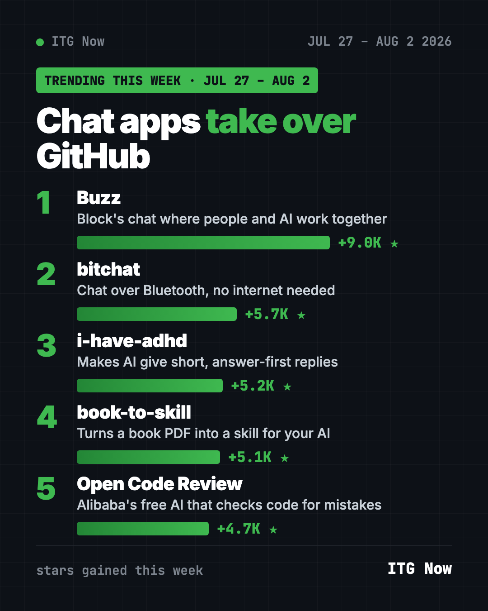
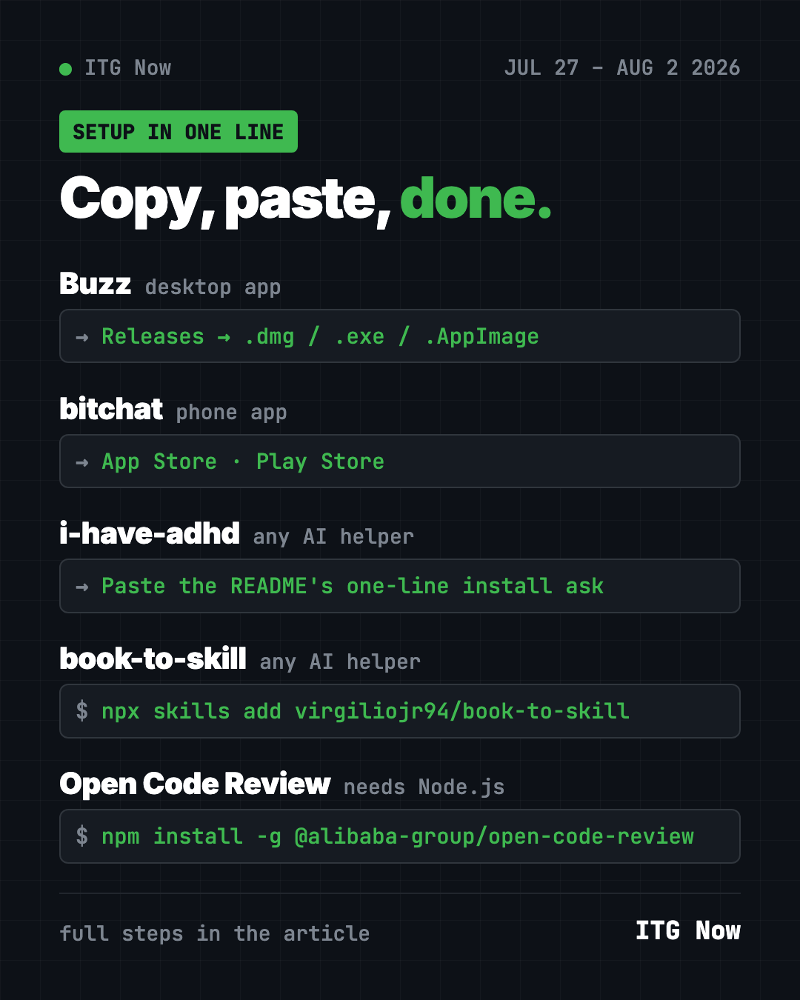

Home › Tools and repos › GitHub trending this week
GitHub Trending Repos the Week of July 27, 2026
- Published 15 Oct 2026
- Updated 16 Oct 2026
- 7 min read
- By the ITG Now team
The GitHub trending repos the week of July 27, 2026 were led by Buzz, a team chat app from Block where people and AI agents share the same rooms. bitchat, i-have-adhd, book-to-skill and Alibaba's Open Code Review completed the top five.
Two of the five are chat apps, and they couldn't be more different. One is built for offices full of AI agents. The other works with no internet at all. The other three make AI helpers clearer, smarter about your books, and better at catching mistakes.
Key takeaways
- Buzz is Block's self-hosted workspace where humans and AI agents chat and work together.
- bitchat sends messages over Bluetooth between nearby phones, with no internet, account or phone number.
- i-have-adhd makes AI helpers lead with the answer and number the steps. No diagnosis needed.
- book-to-skill turns a technical book PDF into a skill your AI helper can look things up in.
- Open Code Review is Alibaba's free AI tool that checks code changes for mistakes.

How they compare
| Repo | What it does | Who it's for | Stars this week | How to get it |
|---|---|---|---|---|
| Buzz | Chat for people and AI agents | Teams trying AI coworkers | +9.0K | Desktop app plus a relay |
| bitchat | Offline Bluetooth chat | Festivals, travel, outages | +5.7K | App Store, Play Store |
| i-have-adhd | Short, answer-first AI replies | Anyone who skims | +5.2K | One prompt |
| book-to-skill | Book PDF to AI skill | Readers of technical books | +5.1K | One command |
| Open Code Review | AI code checker | Developers and teams | +4.7K | npm, needs an AI model |
Star gains cover July 27 to August 2 only. Totals were checked on October 16, 2026.
1. Buzz: a chat room for people and AI agents
Stars: +9.0K this week · about 36K total
What it is: A free, self-hostable workspace from Block. It has channels, threads, direct messages and search, like a team chat app. The twist is that AI agents sit in the same rooms as people. You run your own "relay," the server that carries the messages.
Who it's for: Small teams and tinkerers who want to try working alongside AI agents.
Everyday use: Ask an AI agent in a channel to draft the weekly update while the team watches.
Install it. Download the desktop app for Mac, Windows or Linux from the latest Buzz release. The app needs a relay to talk to. Developers can run one locally, as the README shows:
git clone https://github.com/block/buzz.git && cd buzz
. ./bin/activate-hermit
just setup && just build
just dev
Or ask your AI helper:
Set up Buzz from github.com/block/buzz on this computer, with a local relay and the desktop app, and explain each step.
⚠️ Heads up: The Windows build isn't code-signed yet, so Windows may warn you on first launch. The README explains how to continue.
2. bitchat: chat with no internet
Stars: +5.7K this week · about 36.6K total
What it is: A free messaging app that hops messages between nearby phones over Bluetooth. When internet is available, it can also reach farther over a network called Nostr. No accounts, no phone numbers, no central servers. The code is public domain.
Who it's for: Festival-goers, hikers, travelers, or anyone caught in a network outage.
Everyday use: Keep your group chat going at a packed concert where cell service dies.
Install it. Get it from the App Store or the Play Store. The README says to use those, or a build you've checked yourself, and not copies from anywhere else.
Or ask your AI helper:
Explain in plain words how bitchat from github.com/permissionlesstech/bitchat sends messages over Bluetooth with no internet.

3. i-have-adhd: answers first, fluff never
Stars: +5.2K this week · about 57.3K total
What it is: A free skill that stops your AI coding helper from burying the answer. It follows 10 rules, like "lead with the next action," "number multi-step tasks," and "end with one concrete next step." The README says you don't need an ADHD diagnosis to use it.
Who it's for: Anyone who skims long AI replies hunting for the one line that matters.
Everyday use: Ask why a test fails and get "Edit this line, then run this" instead of an essay.
Install it. Paste this one line into your AI helper, as the README says:
Install the i-have-adhd skill/plugin from https://github.com/ayghri/i-have-adhd, refer to the repo's AGENTS.md for instructions.
4. book-to-skill: ask your books questions
Stars: +5.1K this week · about 35K total
What it is: A free skill that turns a technical book, a folder of documents, or other sources into a skill your AI helper can load. It keeps the book's structure, rules and chapters, not just a summary. The makers measured 24 to 51 times fewer tokens than pasting the whole book in.
Who it's for: People who read technical books once and forget chapter 7 by next month.
Everyday use: Turn a cookbook-style coding book into a skill, then ask it for the right recipe.
Install it. Copy and paste this:
npx skills add virgiliojr94/book-to-skill
Or ask your AI helper:
/book-to-skill ./my-book.pdf
💡 Tip: Use books you own. A skill built from a book is for your own study, not for sharing.
5. Open Code Review: Alibaba's AI code checker
Stars: +4.7K this week · about 47.3K total
What it is: A free command-line tool that reviews code changes with AI and leaves line-by-line comments. The README says it began as Alibaba's internal review assistant, used by tens of thousands of developers. In its own test, it used about a ninth of the tokens Claude Code did.
Who it's for: Developers and small teams who want a careful second look before they merge.
Everyday use: Run one command before you share your work and fix what it flags.
Install it. You need Node.js and an AI model account. Copy and paste this:
npm install -g @alibaba-group/open-code-review
ocr config provider
ocr review
Or ask your AI helper:
Install Open Code Review from github.com/alibaba/open-code-review, connect my AI provider, and review my uncommitted changes.
See Open Code Review on GitHub
Which one should you try first?
- Want offline chat: bitchat. It's a normal phone app.
- Hate long AI replies: i-have-adhd. One prompt and you're done.
- Have a shelf of PDFs: book-to-skill.
- Write code for a living: Open Code Review.
- Curious about AI coworkers: Buzz, if you're up for some setup.
Round out the month with the top GitHub repos of July 2026 and July 2026 in AI news. Then see the week of August 3, or go back to the week of July 20.
FAQ
What were the GitHub trending repos the week of July 27, 2026?
Buzz led with about 9,000 new stars. bitchat, i-have-adhd, book-to-skill and Open Code Review followed.
Does bitchat really work without internet?
Yes. Nearby phones pass messages to each other over Bluetooth. Internet is only needed to reach people far away.
Is i-have-adhd only for people with ADHD?
No. The README says no diagnosis is needed. It just makes answers shorter and clearer for everyone.
Is Open Code Review free?
The tool is free and open source under Apache-2.0. You connect your own AI model, which may charge per use.
Keep reading

Trending GitHub Repos October 2026: The Top 5 So Far
The trending GitHub repos of October 2026 so far: a free Photoshop-style editor, an AI art studio, a big AI model for gaming PCs and more, explained.

Trending GitHub Repos This Week, Oct 5 2026: The Top 5
Trending GitHub repos this week Oct 5 2026: Matt Pocock's skills, the openGym workout tracker, e2e testing, HyperFrames video and claude-mem memory.

GitHub Trending September 28, 2026: Hindsight and Paperclip
GitHub trending September 28 2026: Hindsight, Paperclip, NVIDIA's OpenShell and a free 542-lesson AI course, with setup steps for each.